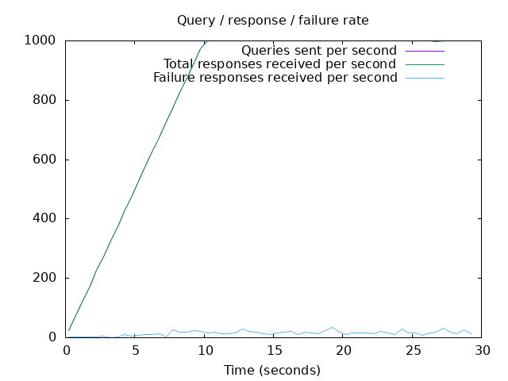
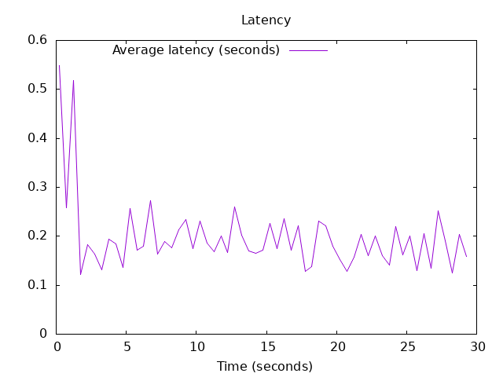

DNS Resolution Performance Testing Tool Version 2.14.0 [Status] Command line: resperf -P 20250619-1358.gnuplot -M doh -s 79.127.218.224 -O doh-uri=https://protective.joindns4.eu/dns-query -d domains_shuffled.list -C 500 -m 1000 -b 1400 -q 500000 -R -r 10 -c 20 -t 30 -F 0 [Status] Sending [Status] Ramp-up done, sending constant traffic [Status] Waiting for more responses Warning: received a response with an unexpected id: 43 [Status] Testing complete Statistics: Queries sent: 24999 Queries completed: 24997 Queries lost: 2 Response codes: NOERROR 16880 (67.53%), SERVFAIL 458 (1.83%), NXDOMAIN 7659 (30.64%) Run time (s): 59.871642 Maximum throughput: 1000.000000 qps Lost at that point: 0.00% Connection attempts: 942 (527 successful, 55.94%) DNS-over-HTTPS statistics: HTTP/2 return codes: 200: 24998
 